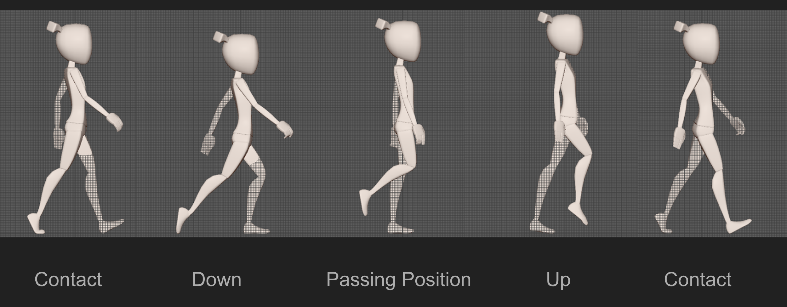
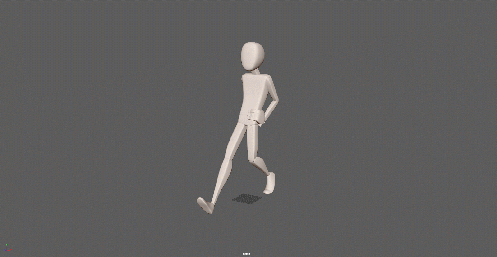
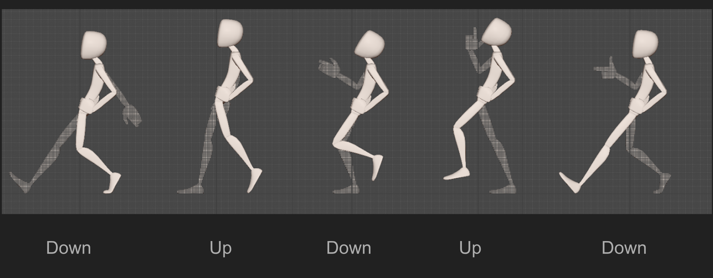
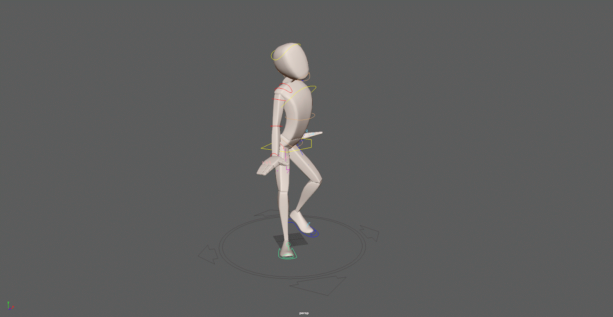
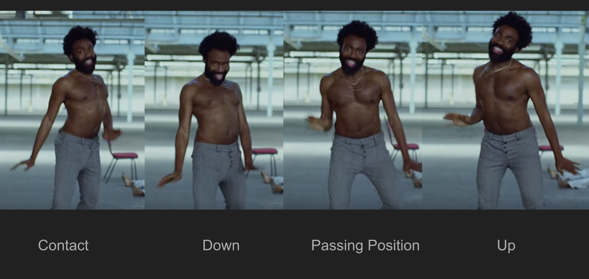

The assignment required students to experiment with simulation. For my first task, I implemented a physical constraint-based cloth model using Python in Maya and tailored it as a tool that allows students/researchers to use their own integrators, alter parameters and render videos for comparison automatically using Maya. I implemented the Verlet integrator and parametric constraints for spheres and planes allowing the cloth to collide with both these geometries.
Week 8: Paper Presentations and Final Project Pitch
Week 7: Fluid Simulation
Week 6: Cloth Simulation
Week 5: Mini Project 1 Presentations
There are 2 parts to this assignment. For the first, my partner Hongzhu Zhao implemented 3 IK solvers using Python in Maya. I then put together an interface using PySide that allows users to easily play with the tools he put together.
Above: Jacobian Transpose, Jacobian Pseudo Inverse, Damped Least Square IK Solvers implemented by Hongzhu Zhao in Maya. I created just the UI you see on the side.
I did a bit of research about deterministic solvers and how they'd be absolutely ideal for most cases in Maya. Maya's native solver is iterative and it really doesn't need to be. Cases where you're rigging a biped only need solvers for systems with (at max) 3 bones, this too if you really REALLY want IK fingers (most people don't). For the legs and arms, its, in the most common case, just two bones and this system can very simply be solved using simple Trigonometry. No iterations required.
Anywho, while Hongzhu was hard at work with the IK solvers, I was diving deep into walkcycles. This was the first time I really got to use Maya's animation system and the graph editor. I had some experience with animation (and walkcycles) in 2d and I saw how it wasn't as seamless a transition to 3d because I couldn't intuitively time the shots using timecharts like I used to for 2d animation.
Started off by revisiting Richard Williams, my dear friend (not really, I just deeply respect the man's work) and created a basic walk cycle.
Above: Basic walk cycle. Notice the hands. The graph editor got a bit messy as I tried to add followthrough on the fingers. I wasn't completely successful.

Above: A breakdown of the walk into its key poses.
With walks, breaking the walk down into these basic poses is the key takeaway from Williams, I feel. The timing and spacing of it is important as well but these poses are what really give the walk it's weight. Playing around with these poses is what allows you to visually communicate different moods, personalities, etcetera with your walks.
Above: The same walk with some rotaion on the hips and crossing on the legs. Sends a different message (i hope).

Above: A happy, confident walk.

Above: Has no Downs. Has two Ups instead, that's what gives it the bounce.

Above: This one was quite a challenge. I wasn't particularly paying attention to the flow of the movement while keyframing this and that came back to haunt me at the end. The final product was jittery and what you see above is the best version of it I could salvage.

Above: Yes, this is where it came from.
Week 5: Paper Presentations
Regarding "ToonSynth: Example-Based Synthesis of Hand-Colored Cartoon Animations": Talk of automating traditional 2d animation always makes me think about softwares such as Moho and ToonBoom and the amazing toolkits they provide.
Above: 2d animation and not 3d animation.
This turnaround of the character's head is entirely based on 2d vector images. Non of the process is automated though. The artist has to adjust the vectors to create this 3d turnaround manually AND THEN it can be used for animating whatever scene. This is where we're at with automated 2d without compromising quality and appeal. Next step would be to automate the process of creating the turnaround using drawings of key turnaround poses maybe. Machine learning approaches, I think, allow the possibility.
Above: Animation created using a 2d rig manually created by an artist in Moho. Regarding "An Empirical Rig for Jaw Animation": I like how the publication is based almost exclusively on knowledge of human anatomy gathered from data and using it to augment traditional jaw rigs. No fancy mathematics in this paper, no sir!
The papers regarding pose and motion capture we went over had me thinking if there's research being done that deals with infering weight distribution in the body mesh using poses alone. I spent some time trying to look up such a publication but to no avail. Could be an interesting method to enhance quality and appeal of motion capture animation.
Week 4: Rigging and Skinning
Regarding "PRECISION: Precomputing Environment Semantics for Contact-Rich Character Animation":
The authors talk about how they separate contact keyframes automatically. These are points in time during the animation where the character interacts with the physical environment. The interaction will almost always affect the character physically in the ideal scenario. The "Tic Tac Motion Skill" demo at timestamp 00:29 of the video below doesn't seem to have any weight or believability to the motion.
Above: PRECISION: Precomputing Environment Semantics for Contact-Rich Character Animation. If the option for adding anticipation and follow through by pushing/exaggerating the contact pose at contact keyframes is given to the artist, the tool could prove to be very practical and functional. Parameters to adjust the intensity of the follow through pose could add another layer of control and enhance the quality of the final animation even further.
Regarding "Differential Blending for Expressive Sketch-Based Posing": The deformations their approach is able to achieve can be a great starting point for artists creating blendshapes.
Regarding "Elastic Implicit Skinning (SIGGRAPH ASIA 2014)": I want to learn more about their method. I love it. Something related to this is a possible final project for the course for me.
Week 4: More IK, Motion Editing
The approach for automating the process of achieving appealing and realistic body gestures taken by the paper titled "Natural motion animation through constraining and deconstraining at will", I feel, can also be used as a great learning tool for novice 3d animators. Restrictions on rotations and translations can be preapplied to models they use or could be applied after they've animated to even give a side by side comparison of the two animations. The animators should of course have the ability to change parameters and adjust motion. This method of restricting angles to certain limits can also be used to automate the process of applying some of Disney's 12 principles to motion capture or traditional 3d animation. Here's an example: Imagine an animation with a shoulder joint being rotated all the way back to the constraint set on its rotation in a certain axis. Immediately after, it moves back forward along the same axis.
As soon as the shoulder joint starts moving back, we can automatically introduce a negative rotation in the elbow joint to achieve follow through on the arm (elbow forward). The magnitude of the follow through can be estimated using speed of the shoulder joint during its initial movement backwards. This could possibly be a handy and powerful tool for creating and editing whole-body motions without special knowledge.
Final thought: The PhysIK paper had a demonstration of a humanoid character swinging through monkey bars and it looked very unnatural. I'm am not by any means even remotely an authority on physics so I can't comment on why it looked that way physically but I could tell what was wrong with the motion and how a traditional animator would have approached it differently. The curves of motion on that particular animation were very very sharp and resulted in sudden changes in direction of motion for the entire body. They were (I think) somehow physically justified because the sudden jerks happened exactly when the character gripped the next monkey bar but, in real life, natural motion mostly follows curved paths that resemble the number 8(transpose or 8 sideways, the infinity sign). This combined with follow through on the hips, I believe, would've made the motion a lot more believable.
Week 3: Inverse Kinematics
Learning about how animation engines work under the hood was my primary motivator for taking Technical Animation. Character TDs don't necessarily need to be knowledgable about this but I believe a strong base of the fundamentals is an absolutely necessary ingredient for growth in any discipline. IK algorithms, one could argue, aren't really the fundamentals for what a TD does; a handle on human anatomy and locomotion are stronger candidates. I'd probably agree but knowing about the inner workings of the systems one uses on a daily basis is a likely catalyst for improvements in workflows and tools.
I was pleasantly surprised at how low the barrier of entry is for actually understanding and implementing these IK algorithms (given all the math coding modules we have access to)!
Some of the real-time IKsolver demonstrations we saw seemed unnatural because of abnormal rotations in the shoulder and elbow joints while the solver iterated to get to the final rotations. The IKsolver I've always used fox limbs in Maya has very natural and "human" non-final rotations. I did a bit of reading about how Maya does it. Very simply put: To simulate actual human limb movement, Maya restricts the rotations of the shoulder and elbow joints to 1 plane! Additionally, it gives the artist a control for the orientation of that plane. That is all...
Week 2: Motion Capture
I've honestly never been a fan of motion capture. I feel it's the complete opposite of what Disney's 12 Principles teach us, I feel it reduces the animator's role to making minor adjustments and clean up. For the animator, it takes away the thrill of putting oneself in the character's shoes, being the actor. Despite all that, it's almost exclusively what AAA game studios are resorting to and to be quite honest, it looks pretty darn good. I spent time thinking about why that might be. So usually, motion capture animation lack weight. For weight (and hence "life") in your animation, you need anticipation, squash, stretch, well thought-out timing and exaggerated poses, all of which require a fair amount of planning and skill to execute. I think motion capture in games works because pressing the buttons to make in-game characters do things IS the anticipation. You know what's coming when you press a button. This is of course augmented by the artists going in and fixing the motion capture at the end too. Rotoscoping and motion capture 3d, I think still lie on the fence between "The Uncanny Valley" and "Acceptable Animation" and I think the absence of anticipation created through button pressing is a major cause.
Week 1: Animation Techniques
I'm interested in knowing more about muscle system simulations causing deformations in skin meshes. I want to know if they can actually be incorporated into 3d art pipelines to aid productions, eliminate the tedious process of manually sculpting several blendshapes for character meshes. The bit about autonomous responsive characters also caught my eye because anything that makes processes better, faster or cheaper will eventually become standard. A big portion of the budget for big productions goes to asset creation. The process is just too time-consuming mostly because workflows being followed for these tasks are static which means you're getting just one output for going through the entire pipeline. A shift to more procedural workflows is inevitable and building transferrable skills enabing me to push for that future is what I'm aiming to do. As somebody trying to break in to the animation industry as a Character Technical Director, I was excited to be introduced to what Computer Graphics research in the field of Character Rigging and Simulation is like.